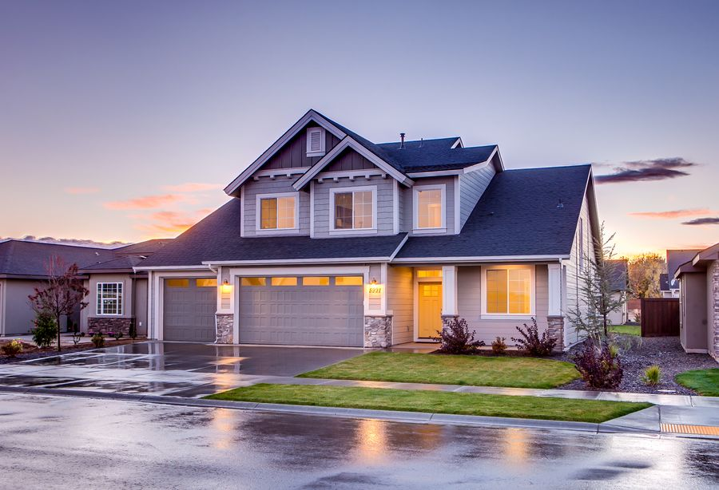

Instalar un suelo de madera no es "colocar tablas y listo". Detrás hay una técnica que hace que el suelo dure décadas sin deformarse, sin crujidos y sin espacios entre las tablas. En este artículo, nuestros instaladores te cuentan paso a paso cómo se hace un trabajo bien hecho en Barcelona.
Antes de empezar, se mide la superficie y se añade un 10-15% extra para los recortes y las tablas que se dañen al cortar. Con poco margen, te quedas corto a mitad de obra; con el justo, desperdicias dinero.
La madera se expande y se contrae con la temperatura y la humedad. Por eso el instalador profesional deja las tablas en la habitación al menos 48 horas antes de colocarlas, para que se ajusten al ambiente. Si se instala demasiado caliente, luego se contrae y deja huecos; si hace frío, se abolla al subir la temperatura.
💡 Detalle de experto: en obras nuevas, la madera solo se instala después de que la calefacción y el aire acondicionado lleven tiempo funcionando, con la temperatura del hogar ya normalizada.
Antes de las tablas, se extiende una barrera de vapor sobre el contrapiso (suele ser papel kraft laminado con asfalto), cubriendo toda la superficie y fijándola con grapas. Así la humedad del suelo de abajo no sube y no daña la madera.
Las tablas se colocan paralelas a la pared exterior más larga, y en ángulo recto con las viguetas del contrapiso. La primera fila se clava a mano, cerca de la pared, con clavos largos que lleguen hasta las viguetas.
Las tablas de madera dura son machihembradas: la lengüeta de una encaja en la ranura de la siguiente. Con un mazo especial se encajan sin dañar la madera. Después se usa una pistola de clavos neumática, que clava la grapa en diagonal a través de la lengüeta, donde quedará escondida por la siguiente tabla. Ese es el famoso "clavado ciego": invisible a la vista.
Cada fila nueva se corta unas 6 pulgadas más corta que la anterior, creando un escalonado. Esto reparte las uniones y da estabilidad y belleza al suelo. Las tablas más largas van en las entradas, que es donde más se ven.
Nunca se coloca la madera pegada a la pared: se deja un hueco de ½ a ¾ de pulgada para que el suelo respire al expandirse. Ese hueco queda tapado por las molduras del zócalo, así que nadie lo nota.
Nuestro equipo también instala suelos y tarimas en Barcelona y alrededores. Presupuesto a domicilio y sin compromiso.